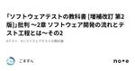

ごまずん
https://note.com/usk_ymst_p
大阪のテストあざらしです
フィード


JSTQBシラバス V4.0.J01 から色々キャッチアップ〜テストレベルとテストタイプ〜
ごまずん
はじめに 私はJSTQBのAL保有マンですが、FLを取ったのは2018年ですので、真面目にリスキリングしようと思いました。 この記事の公開は2024年6月で、試験は2024年10月以降らしい。 まだ慌てる時間じゃないということで、気ままにシラバスを見ていこうと思います。 また、おそらく私の記事ではISTQBの原文は参照しません。 過去の経験からあんまり意味がないとわかっているからです。 ex.日本語シラバスでよくわからんところはどうせ原文でもよくわからない。 続きをみる
4日前

JSTQBシラバス V4.0.J01 から色々キャッチアップ〜コンテキストに応じたソフトウェア開発ライフサイクルでのテスト part2〜
ごまずん
はじめに 私はJSTQBのAL保有マンですが、FLを取ったのは2018年ですので、真面目にリスキリングしようと思いました。 この記事の公開は2024年6月で、試験は2024年10月以降らしい。 まだ慌てる時間じゃないということで、気ままにシラバスを見ていこうと思います。 また、おそらく私の記事ではISTQBの原文は参照しません。 過去の経験からあんまり意味がないとわかっているからです。 ex.日本語シラバスでよくわからんところはどうせ原文でもよくわからない。 続きをみる
5日前

テスト技法:デシジョンテーブルってなんなの？〜ごまずんのオレオレデシジョンテーブル編〜
ごまずん
はじめに 本記事は私がデシジョンテーブルを書く時に大切にしていることや、オレオレのやり方について解説します。 続きをみる
6日前
QAエンジニアがいったん自分の仕事を棚上げして消費者目線で品質について素朴に検討しなおしてみた
ごまずん
はじめに 本記事では「品質」について考え直したいと思います。 まず私のQAエンジニアとしての品質についてのポジぺは別の記事で記載しています。 続きをみる
9日前
JaSST'24 Kansaiの実行委員インタビュー 山下編
ごまずん
はじめに 2024年6月21日にJaSST'24 Kansaiが行われました。 本記事ではJaSST Kansai実行委員の募集を目的として、筆者のごまずんがJaSST Kansai実行委員の山下さんにインタビューしてきました。 本記事を一読いただき、関西のソフトウェアテスト/QA業界を盛り上げるためにJaSST Kansai実行委員会に参加していただければ幸いです。 続きをみる
11日前
JSTQBシラバス V4.0.J01 から色々キャッチアップ〜コンテキストに応じたソフトウェア開発ライフサイクルでのテスト〜
ごまずん
はじめに 私はJSTQBのAL保有マンですが、FLを取ったのは2018年ですので、真面目にリスキリングしようと思いました。 この記事の公開は2024年6月で、試験は2024年10月以降らしい。 まだ慌てる時間じゃないということで、気ままにシラバスを見ていこうと思います。 また、おそらく私の記事ではISTQBの原文は参照しません。 過去の経験からあんまり意味がないとわかっているからです。 ex.日本語シラバスでよくわからんところはどうせ原文でもよくわからない。 続きをみる
13日前

「ソフトウェアテストの教科書 [増補改訂 第2版]」批判 〜2章 ソフトウェア開発の流れとテスト工程とは〜その2
ごまずん
はじめに 本記事は「ソフトウェアテストの教科書 [増補改訂 第2版]」という本について、ひとりのDirty Tester目線で批判する記事です。 続きをみる
14日前

「ソフトウェアテストの教科書 [増補改訂 第2版]」批判 〜2章 ソフトウェア開発の流れとテスト工程とは〜その１
ごまずん
はじめに 本記事は「ソフトウェアテストの教科書 [増補改訂 第2版]」という本について、ひとりのDirty Tester目線で批判する記事です。 続きをみる
15日前
JSTQBシラバス V4.0.J01 から色々キャッチアップ〜テストに必要不可欠なスキルとよい実践例〜
ごまずん
はじめに 私はJSTQBのAL保有マンですが、FLを取ったのは2018年ですので、真面目にリスキリングしようと思いました。 この記事の公開は2024年6月で、試験は2024年10月以降らしい。 まだ慌てる時間じゃないということで、気ままにシラバスを見ていこうと思います。 また、おそらく私の記事ではISTQBの原文は参照しません。 過去の経験からあんまり意味がないとわかっているからです。 ex.日本語シラバスでよくわからんところはどうせ原文でもよくわからない。 続きをみる
22日前
JaSST'24 Kansaiに参加しないと得られないメリット
ごまずん
はじめに 2024年6月21日(金)東リいたみホールにて、JaSST'24 Kansaiが開催されます。 本記事はJaSST'24 Kansaiへの集客を目的として、JaSSTに参加しないと得られないメリットについて記載します。 続きをみる
1ヶ月前
JaSST'24 Kansaiの見どころ〜実行委員Presents〜
ごまずん
はじめに 2024年6月21日(金)東リいたみホールにて、JaSST'24 Kansaiが開催されます。 本記事はJaSST'24 Kansaiへの集客を目的として、実行委員Presentsのコンテンツについて予告をいたします。 執筆者のごまずんの友人が、実行委員LTとワークショップの運営をするため、応援したい気持ちで執筆しています。 続きをみる
1ヶ月前
JSTQBシラバス V4.0.J01 から色々キャッチアップ〜テスト活動、テストウェア、そして役割編〜
ごまずん
はじめに 私はJSTQBのAL保有マンですが、FLを取ったのは2018年ですので、真面目にリスキリングしようと思いました。 この記事の公開は2024年5月で、試験は2024年10月以降らしい。 まだ慌てる時間じゃないということで、気ままにシラバスを見ていこうと思います。 また、おそらく私の記事ではISTQBの原文は参照しません。 過去の経験からあんまり意味がないとわかっているからです。 ex.日本語シラバスでよくわからんところはどうせ原文でもよくわからない。 続きをみる
1ヶ月前
JSTQBシラバス V4.0.J01 から色々キャッチアップ〜なぜテストが必要か？とテストの原則編〜
ごまずん
はじめに 私はJSTQBのAL保有マンですが、FLを取ったのは2018年ですので、真面目にリスキリングしようと思いました。 この記事の公開は2024年5月で、試験は2024年10月以降らしい。 まだ慌てる時間じゃないということで、気ままにシラバスを見ていこうと思います。 また、おそらく私の記事ではISTQBの原文は参照しません。 過去の経験からあんまり意味がないとわかっているからです。ex.日本語シラバスでよくわからんところはどうせ原文でもよくわからない。 続きをみる
1ヶ月前
「ソフトウェアテストの教科書 [増補改訂 第2版]」批判 〜1章 ソフトウェアテストとは〜
ごまずん
はじめに 本記事は「ソフトウェアテストの教科書 [増補改訂 第2版]」という本について、ひとりのDirty Tester目線で批判する記事です。 続きをみる
1ヶ月前
JSTQBシラバス V4.0.J01 から色々キャッチアップ〜テストとは何か？編〜
ごまずん
はじめに 私はJSTQBのAL保有マンですが、FLを取ったのは2018年ですので、真面目にリスキリングしようと思いました。 この記事の公開は2024年5月で、試験は2024年10月以降らしい。 まだ慌てる時間じゃないということで、気ままにシラバスを見ていこうと思います。 また、おそらく私の記事ではISTQBの原文は参照しません。 過去の経験からあんまり意味がないとわかっているからです。ex.日本語シラバスでよくわからんところはどうせ原文でもよくわからない。 続きをみる
1ヶ月前
テスト技法ってなんなの？〜テスト技法とその先〜
ごまずん
はじめに この記事では「テスト技法」について解説します。 テスト技法について、本質的なところが語られずに、「なんとなく使っている」という状態が良く見れます。 この記事ではテスト技法の存在意義について語ろうと思います。 続きをみる
1ヶ月前
品質とQAに関するポジションペーパー
ごまずん
はじめに 本記事は「QAなんもわからん会」に参加される皆様に、「なんかわかる人」として参加する私のQAのスタンスについて理解していただくための、かなり強めの自己開示です。 テキストで指摘されると多分傷つくので、こちらにコメントする場合はぜひなんもわからん会で指摘してください。 続きをみる
2ヶ月前